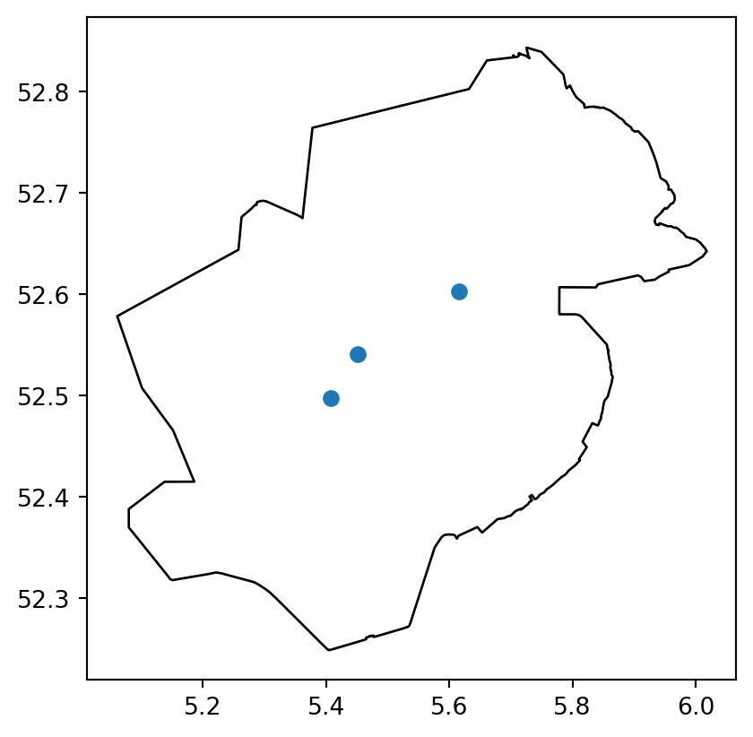

from pathlib import Path
from toolbox_continu_inzicht.base.config import Config
from toolbox_continu_inzicht.base.data_adapter import DataAdapterInspectieresultaten
path = Path.cwd() / "data_sets"
config = Config(config_path=path / "example_inspection.yaml")
config.lees_config()
data_adapter = DataAdapter(config=config)data_adapter.input("inspections_results")| location_id | prioriteit | x | y | opmerking | datum | tijd | waterschap | |
|---|---|---|---|---|---|---|---|---|
| 0 | 0 | 0 | 5.533930 | 52.596911 | foutje | 2-4-2025 | 09:08 | Zuiderzeeland |
| 1 | 1 | 1 | 5.451603 | 52.540697 | scheurvorming | 28-3-2025 | 15:48 | Zuiderzeeland |
| 2 | 2 | 3 | 5.407599 | 52.497642 | opschot | 28-3-2025 | 15:50 | Zuiderzeeland |
| 3 | 3 | 11 | 5.616243 | 52.602794 | beginnende scheurvorming | 31-3-2025 | 09:02 | Zuiderzeeland |
Filter resultaten uit de input tabel:
GlobalVariables:
...
Filter:
query: "prioriteit > 0"
drop_columns:
- "waterschap"
- "location_id"from toolbox_continu_inzicht.inspections.filter import Filterfilter = Filter(data_adapter=data_adapter)
filter.run(input="inspections_results", output="filter_resultaten")filter.df_out| prioriteit | x | y | opmerking | datum | tijd | |
|---|---|---|---|---|---|---|
| 1 | 1 | 5.451603 | 52.540697 | scheurvorming | 28-3-2025 | 15:48 |
| 2 | 3 | 5.407599 | 52.497642 | opschot | 28-3-2025 | 15:50 |
| 3 | 11 | 5.616243 | 52.602794 | beginnende scheurvorming | 31-3-2025 | 09:02 |
De gefilterde tabel kunnen we vervolgens classificeren
Als we geen opmaak informatie meegeven in de input wordt de standaard opmaak toegepast
from toolbox_continu_inzicht.inspections.inspections import ClassifyInspectionsclassify_inspections = ClassifyInspections(data_adapter=data_adapter)
classify_inspections.run(input="filter_resultaten", output="classify_resultaten")classify_inspections.df_out| prioriteit | x | y | opmerking | datum | tijd | geometry | symbol | weight | radius | fillColor | dashArray | fillOpacity | color | opacity | |
|---|---|---|---|---|---|---|---|---|---|---|---|---|---|---|---|
| 0 | 1 | 5.451603 | 52.540697 | scheurvorming | 28-3-2025 | 15:48 | POINT (5.4516 52.5407) | CircleMarker | 3.0 | 10.0 | #9e9e9e | NaN | 0.2 | #9e9e9e | 1.0 |
| 1 | 3 | 5.407599 | 52.497642 | opschot | 28-3-2025 | 15:50 | POINT (5.4076 52.49764) | CircleMarker | 3.0 | 10.0 | #9e9e9e | NaN | 0.2 | #9e9e9e | 1.0 |
| 2 | 11 | 5.616243 | 52.602794 | beginnende scheurvorming | 31-3-2025 | 09:02 | POINT (5.61624 52.60279) | CircleMarker | 3.0 | 10.0 | #9e9e9e | NaN | 0.2 | #9e9e9e | 1.0 |
Als we wel styling mee geven wordt dit toegepast
data_adapter.input("styling_example")| id | name | description | color | lower_boundary | upper_boundary | |
|---|---|---|---|---|---|---|
| 0 | 2 | 1 | NaN | #a9070f | 0.9 | 1.1 |
| 1 | 3 | 2 | NaN | #07a9a1 | 1.9 | 2.1 |
| 2 | 4 | 3 | NaN | #0760a9 | 2.9 | 3.1 |
| 3 | 4 | 4 | NaN | #5007a9 | 3.9 | 4.1 |
In de config moeten we alleen de kolom opgeven waarop geclassificeerd wordt.
GlobalVariables:
...
ClassifyInspections:
classify_column: "prioriteit"classify_inspections_styling = ClassifyInspections(data_adapter=data_adapter)
classify_inspections_styling.run(
input=["filter_resultaten", "styling_example"], output="classify_resultaten"
)classify_inspections_styling.df_out| prioriteit | x | y | opmerking | datum | tijd | geometry | symbol | color | dashArray | fillOpacity | opacity | weight | radius | fillColor | |
|---|---|---|---|---|---|---|---|---|---|---|---|---|---|---|---|
| 0 | 1 | 5.451603 | 52.540697 | scheurvorming | 28-3-2025 | 15:48 | POINT (5.4516 52.5407) | CircleMarker | #a9070f | NaN | 0.2 | 1.0 | 3.0 | 10.0 | #9e9e9e |
| 1 | 3 | 5.407599 | 52.497642 | opschot | 28-3-2025 | 15:50 | POINT (5.4076 52.49764) | CircleMarker | #0760a9 | NaN | 0.2 | 1.0 | 3.0 | 10.0 | #9e9e9e |
| 2 | 11 | 5.616243 | 52.602794 | beginnende scheurvorming | 31-3-2025 | 09:02 | POINT (5.61624 52.60279) | CircleMarker | #9e9e9e | NaN | 0.2 | 1.0 | 3.0 | 10.0 | #9e9e9e |
Stel we willen naast color ook fillColor toevoegen en een Marker met symbool in plaats van rondje, dan zetten we deze kolom ook in de opmaak tabel
data_adapter.input("more_styling_example")| id | name | description | color | fillColor | geometry_type | lower_boundary | upper_boundary | |
|---|---|---|---|---|---|---|---|---|
| 0 | 2 | 1 | NaN | #a9070f | #a9070f | Marker | 0.9 | 1.1 |
| 1 | 3 | 2 | NaN | #07a9a1 | #07a9a1 | Marker | 1.9 | 2.1 |
| 2 | 4 | 3 | NaN | #0760a9 | #0760a9 | Marker | 2.9 | 3.1 |
| 3 | 5 | 4 | NaN | #5007a9 | #5007a9 | Marker | 3.9 | 4.1 |
classify_inspections_more_styling = ClassifyInspections(data_adapter=data_adapter)
classify_inspections_more_styling.run(
input=["filter_resultaten", "more_styling_example"], output="classify_resultaten"
)En dan zien we dat fillColor nu ook geclassificeerd is:
data_adapter.input("inspections_results")| location_id | prioriteit | x | y | opmerking | datum | tijd | waterschap | |
|---|---|---|---|---|---|---|---|---|
| 0 | 0 | 0 | 5.533930 | 52.596911 | foutje | 2-4-2025 | 09:08 | Zuiderzeeland |
| 1 | 1 | 1 | 5.451603 | 52.540697 | scheurvorming | 28-3-2025 | 15:48 | Zuiderzeeland |
| 2 | 2 | 3 | 5.407599 | 52.497642 | opschot | 28-3-2025 | 15:50 | Zuiderzeeland |
| 3 | 3 | 11 | 5.616243 | 52.602794 | beginnende scheurvorming | 31-3-2025 | 09:02 | Zuiderzeeland |
classify_inspections_more_styling.df_out| prioriteit | x | y | opmerking | datum | tijd | geometry | symbol | color | fillColor | opacity | |
|---|---|---|---|---|---|---|---|---|---|---|---|
| 0 | 1 | 5.451603 | 52.540697 | scheurvorming | 28-3-2025 | 15:48 | POINT (5.4516 52.5407) | Marker | #a9070f | #a9070f | 1.0 |
| 1 | 3 | 5.407599 | 52.497642 | opschot | 28-3-2025 | 15:50 | POINT (5.4076 52.49764) | Marker | #0760a9 | #0760a9 | 1.0 |
| 2 | 11 | 5.616243 | 52.602794 | beginnende scheurvorming | 31-3-2025 | 09:02 | POINT (5.61624 52.60279) | Marker | #9e9e9e | #9e9e9e | 1.0 |
Dit is al een geo object wat we hier kunnen tonen
import geopandas as gpdax = classify_inspections_more_styling.df_out.plot()
gpd.read_file(path / "provincie_flevoland.geojson").plot(
ax=ax, color="white", edgecolor="black", zorder=-1
)
Voor de viewer is een legenda tabel ook nuttig, deze kan als extra output worden opgegeven
classify_inspections_more_styling = ClassifyInspections(data_adapter=data_adapter)
classify_inspections_more_styling.run(
input=["filter_resultaten", "more_styling_example"],
output=["classify_resultaten", "legenda"],
)classify_inspections_more_styling.df_legend_out| id | name | description | color | fillColor | geometry_type | lower_boundary | upper_boundary | opacity | |
|---|---|---|---|---|---|---|---|---|---|
| 0 | 2 | 1 | NaN | #a9070f | #a9070f | Marker | 0.9 | 1.1 | 1.0 |
| 1 | 3 | 2 | NaN | #07a9a1 | #07a9a1 | Marker | 1.9 | 2.1 | NaN |
| 2 | 4 | 3 | NaN | #0760a9 | #0760a9 | Marker | 2.9 | 3.1 | NaN |
| 3 | 5 | 4 | NaN | #5007a9 | #5007a9 | Marker | 3.9 | 4.1 | NaN |
Vervolgens kan de output van de inspecties klaar gezet worden voor de database
from toolbox_continu_inzicht.inspections.inspections import InspectionsToDatabaseinspections_to_database = InspectionsToDatabase(data_adapter=data_adapter)
inspections_to_database.run(
input=["classify_resultaten", "legenda"],
output="example_to_database",
)Skipping field tijd: unsupported OGR type: 10inspections_to_database.df_out| group_name | layer_name | layer_visible | layer_type | layer_data | layer_legend | |
|---|---|---|---|---|---|---|
| 0 | Extra Kaartlagen | Inspectieresultaten | true | geojson | {"type": "FeatureCollection", "features": [{"i... | [{"id": 2, "name": 1, "description": "", "colo... |
Als we niks op geven in de als layers wordt er automatisch een aantal standaard opties overgenomen
inspections_to_database.df_in_layers| group_name | layer_name | layer_visible | layer_type | |
|---|---|---|---|---|
| 0 | Extra Kaartlagen | Inspectieresultaten | true | geojson |
Deze kan ook uitgebreider
data_adapter.input("layers")| group_name | layer_name | layer_visible | layer_type | layer_table | layer_wms_url | layer_wms_layer | layer_wms_style | layer_wms_legend_url | layer_data | layer_legend | |
|---|---|---|---|---|---|---|---|---|---|---|---|
| 0 | Extra Kaartlagen | Geojson met data | True | geojson | NaN | NaN | NaN | NaN | NaN | NaN | NaN |
| 1 | Extra Kaartlagen | WMS test | True | wms | NaN | https://geo.hkvservices.nl/geoserver/wms | Waterdiepte | liwo_waterdiepte_band1 | NaN | NaN | NaN |
| 2 | Extra Kaartlagen | table test | True | table | areas | NaN | NaN | NaN | NaN | NaN | NaN |
GlobalVariables:
...
InspectionsToDatabase:
index: 2inspections_to_database = InspectionsToDatabase(data_adapter=data_adapter)
inspections_to_database.run(
input=["classify_resultaten", "legenda", "layers"],
output="example_to_database",
)Skipping field tijd: unsupported OGR type: 10inspections_to_database.df_out| group_name | layer_name | layer_visible | layer_type | layer_table | layer_wms_url | layer_wms_layer | layer_wms_style | layer_wms_legend_url | layer_data | layer_legend | |
|---|---|---|---|---|---|---|---|---|---|---|---|
| 0 | Extra Kaartlagen | Geojson met data | True | geojson | NaN | NaN | NaN | NaN | NaN | {"type": "FeatureCollection", "features": [{"i... | [{"id": 2, "name": 1, "description": "", "colo... |
| 1 | Extra Kaartlagen | WMS test | True | wms | NaN | https://geo.hkvservices.nl/geoserver/wms | Waterdiepte | liwo_waterdiepte_band1 | NaN | ||
| 2 | Extra Kaartlagen | table test | True | table | areas | NaN | NaN | NaN | NaN |
Tot nu toe was alles lokaal naar csv, maar dit kan juist naar de database
path = Path.cwd() / "data_sets"
config = Config(config_path=path / "example_inspection_db.yaml")
config.lees_config()
data_adapter = DataAdapter(config=config)inspections_to_database.df_in_layers| group_name | layer_name | layer_visible | layer_type | layer_table | layer_wms_url | layer_wms_layer | layer_wms_style | layer_wms_legend_url | layer_data | layer_legend | |
|---|---|---|---|---|---|---|---|---|---|---|---|
| 0 | Extra Kaartlagen | Geojson met data | True | geojson | NaN | NaN | NaN | NaN | NaN | NaN | NaN |
| 1 | Extra Kaartlagen | WMS test | True | wms | NaN | https://geo.hkvservices.nl/geoserver/wms | Waterdiepte | liwo_waterdiepte_band1 | NaN | NaN | NaN |
| 2 | Extra Kaartlagen | table test | True | table | areas | NaN | NaN | NaN | NaN | NaN | NaN |
Omdat database interactie op GitHub niet mogelijk wordt de onderstaande cell niet uitgevoerd, lokaal kan dit uiteraard wel
# inspections_to_database = InspectionsToDatabase(data_adapter=data_adapter)
# inspections_to_database.run(
# input=["classify_resultaten", "legenda", "layers"],
# output="to_ci_database",
# )